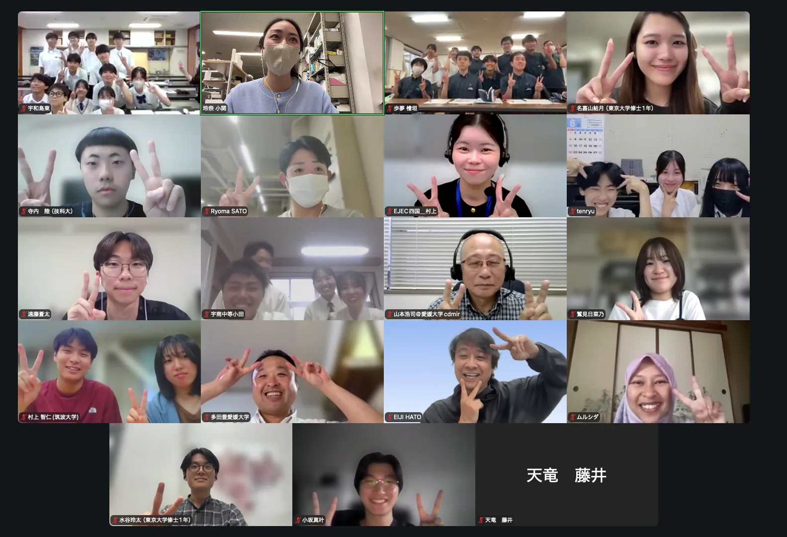
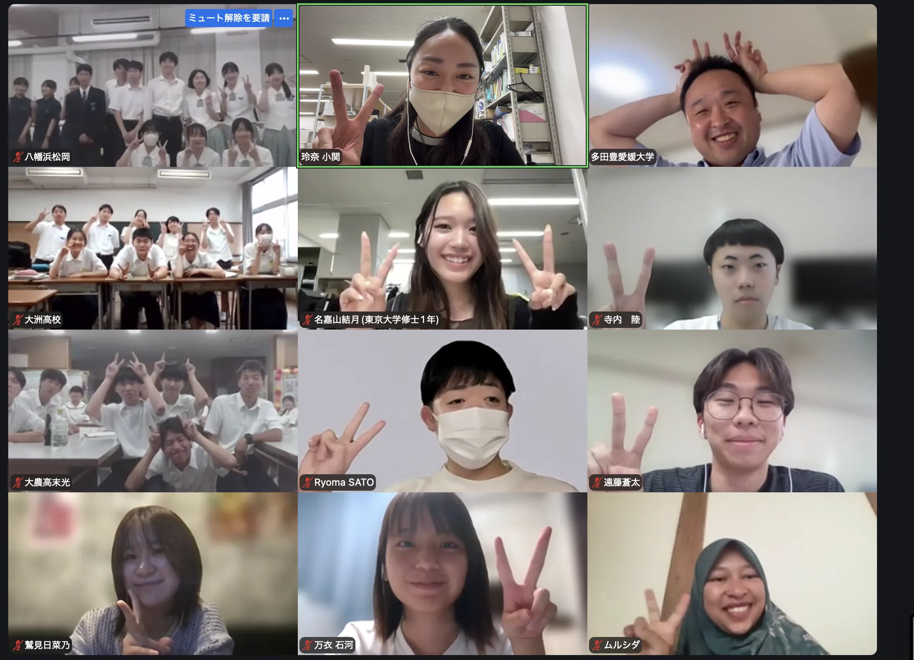

| 日程 | 形式 | 内容 | 参加校 |
|---|---|---|---|
| 6/9（火）・12（金） | 初回授業 | ガイダンス 大学での研究の紹介 | 宇和島東高校，宇和島南中等，大洲高校，大洲農業高校，天竜高校，南宇和高校，八幡浜高校 |
| 7/10（金）・15（水） | 第二回授業 | 視察前準備 課題テーマの設定 | 宇和島東高校，宇和島南中等，大洲高校，大洲農業高校，天竜高校，南宇和高校，八幡浜高校 |
教員・大学生コーチの自己紹介を行ったのち，東京大学博士課程1年の小関玲奈さんから研究の紹介を行いました。災害と都市形成史・居住地選択の関係をみる小関さんの研究は，高校生自らが地域の将来を考える防災地理部の活動と地続きであるといえます。地域の一人ひとりの理解や選択が，まち全体の災害への強さを形づくっていくことを改めて確認し，今年度の防災地理部の活動がスタートしました。
6/9（火）参加校：宇和島東高校，宇和島南中等，天竜高校，南宇和高校

6/12（金）参加校：大洲高校，大洲農業高校，八幡浜高校
